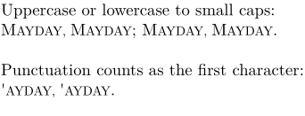

Syntax (autogenerated)
Syntax
| \cap{...} | |
| {...} | text |
Description
Turns the first character of the text into a small capital, regardless of case. In Mkii, this works as a solution for fonts lacking small capitals.
Example
-
\setupbodyfont[9pt] Uppercase or lowercase to small caps:\crlf \Cap{Mayday, Mayday}; \Cap{mayday, mayday}.\crlf Punctuation counts as the first character:\crlf \Cap{'ayday, 'ayday}.\crlf
- 
See also
- \sc — start using small caps (preserve capitals)
- \cap — turn text into small caps
- \Cap — turn first character into small caps
- \Caps — turn first character of each word into small caps
- \CAP — change specific letters to small capitals (MkII)
- \Word — turn first character into uppercase
- \Words — turn first character of each word into uppercase
- \WORD , \WORDS — turn text into uppercase
- \setcharactercasing — Pass casing command (Word, WORD, etc) as a keyword
- typo-cap.mkiv
Help from ConTeXt-Mailinglist/Forum
All issues with: